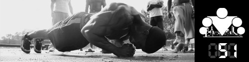

100 Дневный воркаут
<==== Вернуться к оглавлению
День 51. Ещё раз про Подтягивания на перекладине

Наш
ПРОДВИНУТЫЙ
блок начинается с повторного разбора всех упражнений, которые составляют нашу тренировочную программу. На этот раз мы будем рассматривать их немного в другом ключе. Теперь главный акцент мы будем делать на работе мышц в разных вариантах их исполнения и на том, как задействовать те или иные мышцы, соответственно.
Собственно говоря, есть всего две вещи, которые вам нужно знать, и о которых я не рассказывал при обзоре
подтягиваний на турнике
в БАЗОВОМ блоке.
Во-первых
, все знают, что существуют разные хваты, и все знают, что для наибольшего эффекта нужно эти хваты чередовать.
Давайте поговорим подробнее о том, что именно делают конкретные хваты и в каких случаях их стоит применять. Представьте себе свой позвоночник, окей? Чем уже ваш хват, то есть чем ближе руки находятся относительно позвоночника, тем лучше вы прорабатываете мышцы, которые находятся рядом с позвоночником. Чем шире хват, тем вы больше прорабатываете мышцы, которые находятся дальше от позвоночника. Фактически, меняя ширину хвата, вы можете смещать акцент нагрузки с одних мышц на другие, прорабатывая всю спину!
При этом следует обратить ваше внимание на тот факт, что самая большая мышца спины (широчайшая, мы о ней говорили в видео - http://www.youtube.com/watch?v=r1_O7l565sM) - едина, если можно так выразиться. То есть в отличии, скажем от грудных мышц (которые состоят из трех частей), или от мышц разгибателей руки (трицепс, состоит из трех частей тоже), или от мышц сгибателей руки (бицепс, состоит из двух мышц) - широчайшие это ОДНА мышца. Поэтому меняя ширину нельзя прокачать разные части широчайшей мышцы! Но за счет смены хвата смещается акцент с широчайших на другие мышцы и они включаются в работу и т.д.
Так же в интернете ходит забавная информация о том, что тяга в вертикальной плоскости, работают на ширину спины, в то время, как все подтягивания, где тяга идёт в горизонтальной плоскости (например,
австралийские
или
back row pull-ups
) - работают на толщину спины. И хотя мы уже косвенно коснулись этого момента в инфо-посте про
3 популярных мифа силовых тренировок
я хочу напомнить вам ещё раз, что мышцы могут делать всего 2 вещи: либо расти в объеме, либо уменьшаться. И делают они это довольно равномерно, а не так, чтобы в ширину мышца увеличилась, а в толщину нет.
Правильное замечание от
ogrudko
: Я бы сказал, что хваты и работа в разных плоскостях прежде всего важна для работы плечевых суставов. Если в горизонтальной тяге самым естественным положением будет пронированный хват, то в вертикальной тяге - нейтральный (параллельный) хват. Опять же чередовать хваты стоит, чтобы не нагружать суставы в одной и той плоскости каждый день (целевые мышцы-то работают всегда, а вот мышцы-агонисты могут задействоваться слегка по разному). Опять же работать стоит с теми хватами, которые удобны и естественны. Если по каким-либо причинам за голову тянуться больно/дискомфортно, то и не заморачиваться над такой техникой.
Дополнительный момент (спасибо за замечание
mtbrDot
) в плане хватов заключается в толщине перекладины на которой вы подтягиваетесь. Чем толще перекладина, тем больше нагрузка на хват (ну и лучше защита от мозолей тоже), соответственно тем больше устают ваши предплечья. И это может быть как плюсом, так и минусом. Плюсом, потому что регулярно подтягиваясь на толстых перекладинах вы очень неслабо прокачаете свои предплечья и силу хвата, а минусом, потому что ваши предплечья будут сдавать раньше, чем спина, а это значит, что на толстых перекладинах спину прокачивать хуже (она просто не будет дополучать нагрузку необходимую для роста).
Во-вторых
, подтягивания подтягиваниям рознь, и поэтому вам следует определиться со своими целями.
Одно дело, если вы хотите увеличить количество повторений, тогда вам следует тренироваться таким образом, чтобы увеличивать количество. Другое дело, если ваша цель - увеличить объем мышц, тогда и ваши тренировки должны быть построены соответствующим образом. Если вы хотите, чтобы ваши тренировки были действительно эффективными - вы должны научиться чувствовать работу мышцы. В каждом упражнении, в каждом подходе, в каждом повторении, вы должны чувствовать, как целевая мышца работает. Если не чувствуете, значит она не работает на полную или вообще не работает!
Продолжая тему, стоит сказать о том, что негативная фаза гораздо эффективнее, в этом плане, чем позитивная. Почему так происходит? Потому что все мышцы изначально запрограммированы на позитивную фазу (на сокращение), они так устроены, они к этому привыкли, и если вы даёте им ту нагрузку, к которой они не подготовлены - то это значительно повышает эффективность тренировки!
Двигаемся дальше, скорость выполнения повторений так же важна и должна соответствовать вашим целям! Негативная фаза каждого повтора должна быть в 2-3 дольше позитивной фазы! Медленную негативную можно комбинировать как с быстрой позитивной, так и с медленной позитивной, в зависимости от того, что даёт вам большую отдачу (мне лично, первый вариант). В любом случае, сами тренировки должны быть интенсивными! То есть между подходами ваш отдых не должен составлять больше 60 секунд (я обычно тренируюсь на 45 секундах). Если делать больше, то мышцы будут успевать восстанавливаться, что снизит эффективность такого вида тренировок.
Вот и всё на сегодня Если возникли какие-либо вопросы, пишите в комментариях ;)
======> День 52. Ещё раз про Приседания